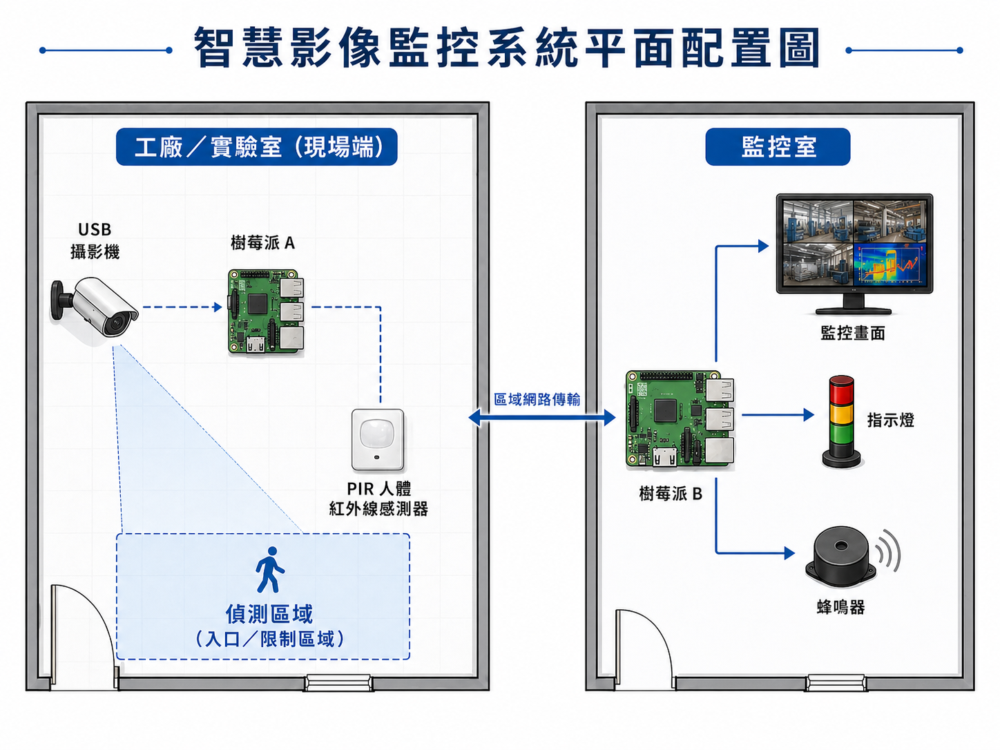

本專題以工廠或實驗室為應用場域，結合 USB 攝影機、雙 Raspberry Pi 架構與 AI 影像辨識模型， 建立可即時偵測異常人員侵入，並將事件資訊與警示結果傳送至監控室的智慧監控系統。
現場端由攝影 Pi 接收 USB 攝影機影像，再交由節點 Pi 執行 AI 人物辨識。 當系統判定為異常事件時，會保留事件片段並傳送至後端與監控室，進一步觸發指示燈、蜂鳴器與監控畫面顯示。
本網站以簡報風格整合目標、應用情境、材料、系統功能、流程架構、平面配置圖與組員分工， 方便用於課堂展示、GitHub Pages 發表與期末提案說明。
建立一套可即時監控工廠或實驗室入口區與限制區域的智慧影像監控系統，透過 AI 影像辨識技術判斷是否有人員異常侵入，並在偵測到事件後，將事件資訊與關鍵片段傳送至監控室，由指示燈與蜂鳴器發出警示，作為安全監控與人員管理的基礎原型。
本系統主要安裝於工廠或實驗室等需要安全管制的場所，尤其適合入口區、重要設備區與限制進入區。系統的重點是偵測是否有異常人員進入監控區域，讓管理者能即時掌握現場狀況。
系統運作時，USB 攝影機會插在攝影 Pi 上，持續擷取入口與重要區域畫面，再交由節點 Pi 進行 AI 人物辨識。當系統判定有人員異常侵入、可疑停留或進入限制區域時，便立即保留事件片段與時間資訊，並透過網路傳送至後端伺服器與監控室，最後由監控端畫面、指示燈與蜂鳴器提醒值班人員即時處理。
利用 USB 攝影機持續擷取入口區與重要區域的現場畫面，作為後續 AI 辨識依據。
透過 AI 模型進行人物偵測，判斷是否有異常侵入、可疑停留或進入限制區域的情形。
異常事件成立後，將結果傳送至監控室，並啟動指示燈、蜂鳴器與事件資訊顯示。
USB 攝影機先將影像輸入攝影 Pi，再交由節點 Pi 進行 AI 分析。當系統判定有人員異常侵入或可疑停留時，節點 Pi 會產生事件資料，包含偵測結果、時間資訊與關鍵片段，並透過區域網路傳送至後端伺服器與監控室。
為降低網路負擔，系統以傳送事件資訊與關鍵片段為主，而不是持續傳送全部影像串流。實作上可評估採用 MQTT、HTTP 或 Socket 作為資料傳遞方式。

負責系統情境規劃、Raspberry Pi 端程式開發、AI 模型部署，以及偵測端與監控端資料傳遞整合。
負責報告撰寫、資料整理、系統整合、硬體規劃與監控室警示模組設計、簡報內容設計。
負責平面配置圖設計、資料整理、攝影機串接，包含指示燈、蜂鳴器與監控端顯示內容測試。